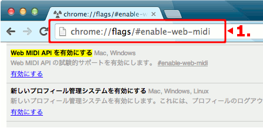
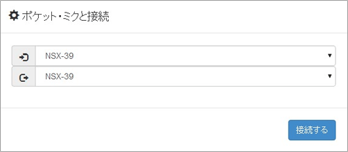

You can edit the lyrics by pressing the "E" button in the lyric input slot. Only Hiragana can input. After inputting, pressing "Enter" on the keyboard sends the lyrics data to the pocket · mic.
After sending the lyrics data, when playing Pocket Miku, Pocket Miku sings according to the sent lyrics.
Lyrics can input 64 letters per slot. There are 15 slots and they are selected with [A] - [O], [SHIFT] + [A] - [O], [VIBRATO] + [A] - [O].
Press [SHIFT] + [VIBRATO] during editing to switch to "Dremi mode".
▲ Return to the top of this page
It is an application that you can input and play lyrics in real time. If you hover over the tile where the letters are written on the screen, you can pronounce that character.
Tiles can be selected from 50, mentai (voiced, semi-voiced), small letters (1) (2), jiyuu (free arrangement) modes.
Jiyuu is a mode that allows you to place characters freely using the "frog" menu.
▲ Return to the top of this page
Configuration is an abbreviation for configuration and means "setting". With this application, you can change the settings of the Pokemon main unit and add new functions at once.
The following four functions are added.
It can not be added individually. For details of the function, please click ▶ on the application screen to confirm.
Please press the install button and read the explanation coming out and if there is no problem press the "send" button. When all the functions are installed, a voice saying "Owarai" appears, and the rewriting of the setting is completed.
If you want to restore the setting back, please press "Uninstall" button, please read the explanation carefully and press "send" button if there is no problem.
Starting sound composer: Mato with mori! (Piatica)
URL: http://piatica.wix.com/piatica
▲ Return to the top of this page
PC (Mac or Windows)
Pocket Miku
micro USB cable (It is not attached to pocket · miku)
Mac OS X 10.6 or later
Windows 8/7 / Vista
Google Chrome Version 33 - 39
▲ Return to the top of this page
Connect with the USB cable and set the power switch of the pocket · mic to "USB".
If you do not connect before you start Google Chrome, it will not be recognized by the application.
Please access the application from here .
Enter chrome: // flags / # enable-web-midi in the address bar as shown on the first "Browser Settings" screen, then enable it in the "Enable Web MIDI API" Please click and restart Google Chrome.

If you agree to the End User License Agreement, you can connect to NSX - 39 (Pocket Mic 's model number).

* If it does not work please restart the computer and proceed from the first step.